サロン動画｜構成図解（3パターン比較）
LP埋め込み 約1分＋15秒広告版 ／ 構成 v3 たたき台 ／ ※共有用：①③はアニメ化した絵を掲載。②の実写写真・動画・店舗情報は載せていません
結論TOP3：次回の打ち合わせで決めてもらうこと
1
構成はこれでよいか
理想→共感→解決→根拠→オファーの1分・15カット
2
①②③のどれにするか
台本は3つとも同じ。違うのは絵の作り方だけ
3
最後のURL
1分LP版→Instagram／15秒広告版→公式LINE（なければLP）
3パターンのちがい
①アニメ工数 大
- 背景も人物もアニメ
- 視聴維持率が高い傾向
- 顔出しの許諾が要らない
②実写工数 小
- モデル撮影の素材をそのまま使い、AIでアングルを足す
- 他サロンと見た目が似やすい
- 顔出しの許諾が必要
③ハイブリッド工数 中
- 背景は実写・人物だけアニメ
- キックオフで先方が「良い」と言った形
- 実在のお店だと伝わり、顔出しの問題も小さい
1分の流れ
C010–4s
C024–7.5s
C037.5–11s
C0411–15s
C0515–18.5s
C0618.5–22s
C0722–25s
C0825–28s
C0928–31.5s
C1031.5–35s
C1135–38.5s
C1238.5–42s
C1342–46s
C1446–50s
C1550–60s
①理想 8秒
いちばん言いたいこと（理想の姿）
②共感 7秒
「わかる」と思ってもらう（共感）
③解決策 17秒
お店の空間とメニュー（解決策）
④根拠 14秒
安心できる理由（根拠）
⑤オファー 14秒
予約の仕方（オファー）
カットごとの比較
カット・映る場面・テロップ・ナレ案
②実写
③ハイブリッド
①アニメ
実写のまま
（顔が写るため非掲載）
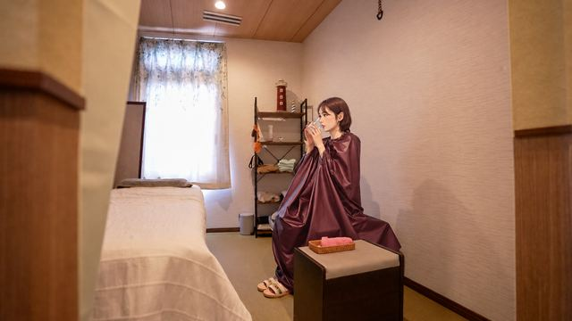
背景は実写／人物アニメ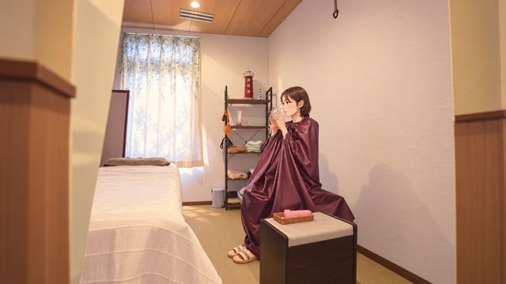
全部アニメ実写のまま
（顔が写るため非掲載）
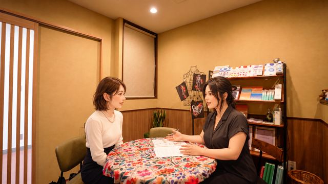
背景は実写／人物アニメ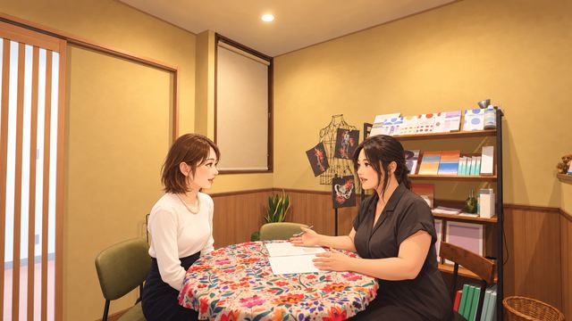
全部アニメ実写のまま
（社内版でのみ表示）
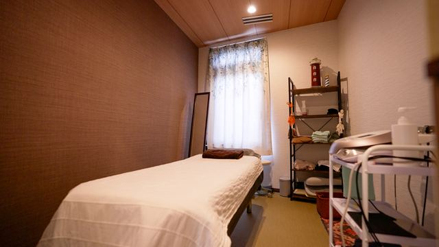
実写のまま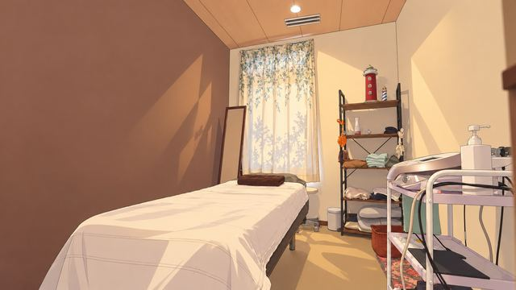
全部アニメ実写のまま
（社内版でのみ表示）
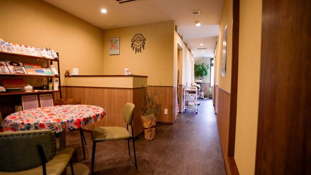
実写のまま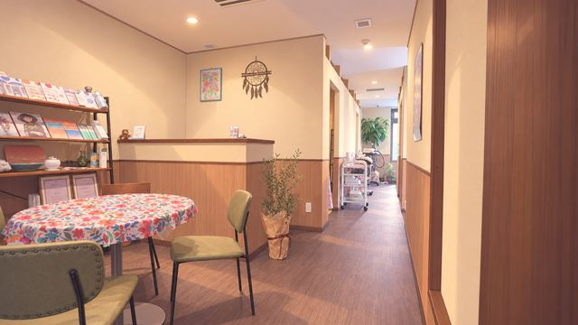
全部アニメ実写のまま
（社内版でのみ表示）
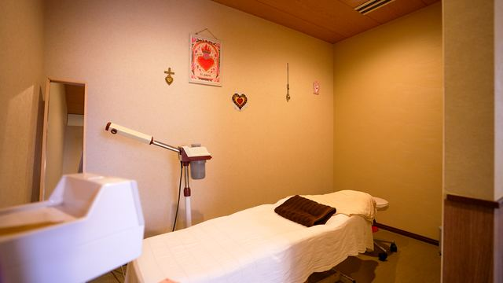
実写のまま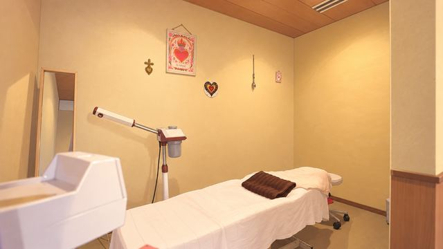
全部アニメ実写のまま
（顔が写るため非掲載）
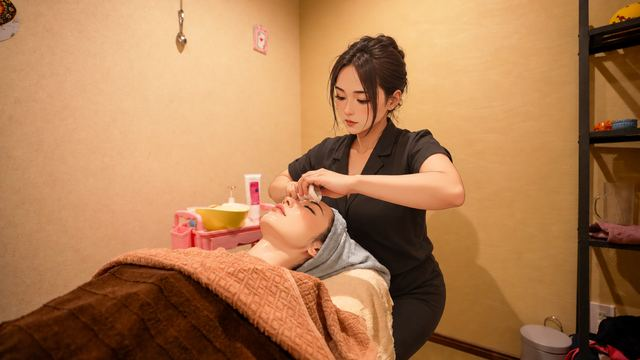
背景は実写／人物アニメ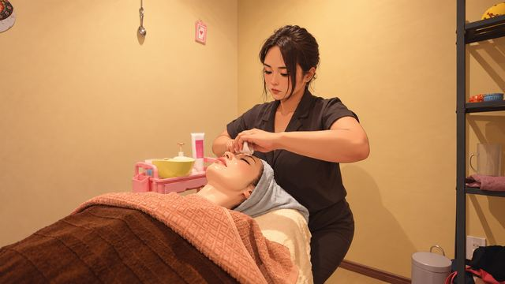
全部アニメ実写のまま
（顔が写るため非掲載）
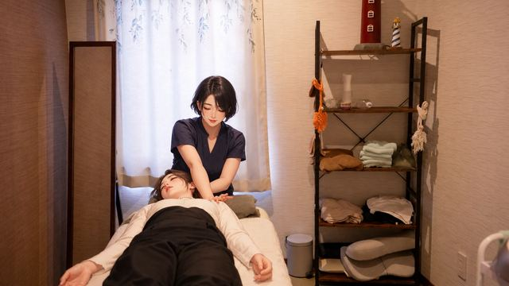
背景は実写／人物アニメ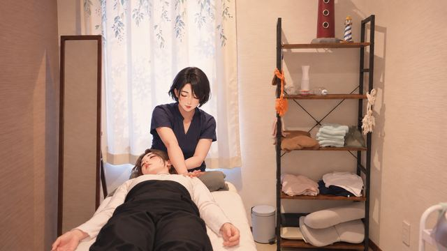
全部アニメ実写のまま
（社内版でのみ表示）
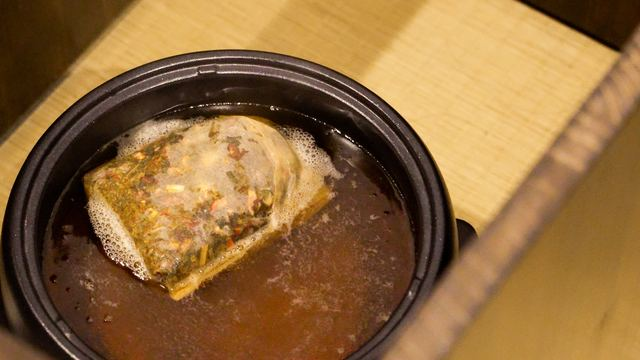
実写のまま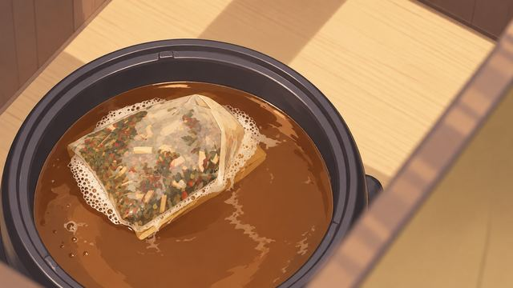
全部アニメ実写のまま
（顔が写るため非掲載）
背景は実写／手元アニメ
（お客様の顔が実写のため非掲載）
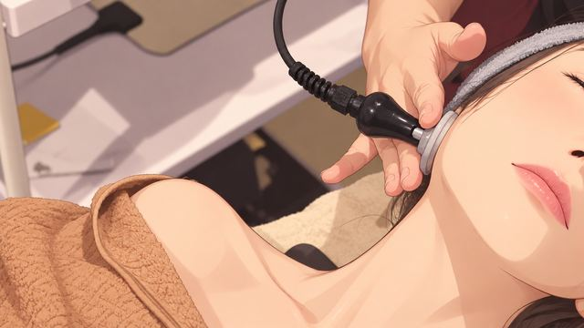
全部アニメ実写のまま
（顔が写るため非掲載）
背景は実写／手元アニメ
（記入済みシートが写るため非掲載）
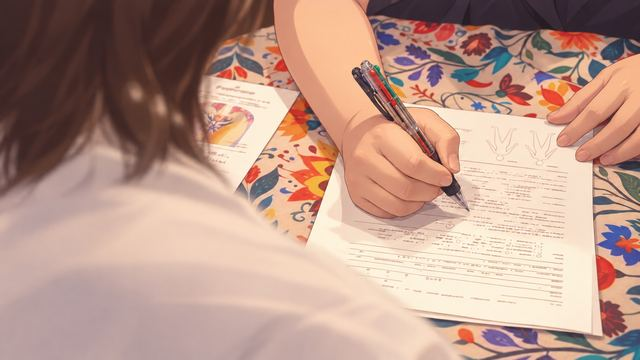
全部アニメ実写のまま
（顔が写るため非掲載）
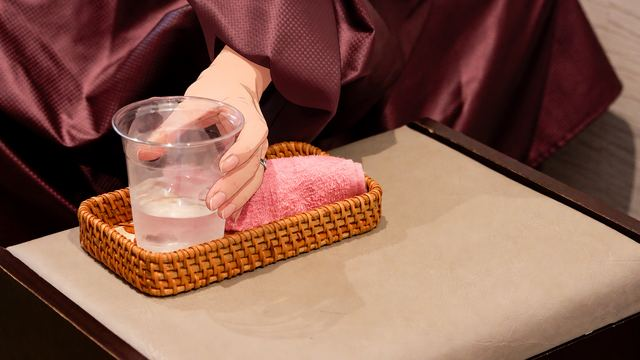
背景は実写／手元アニメ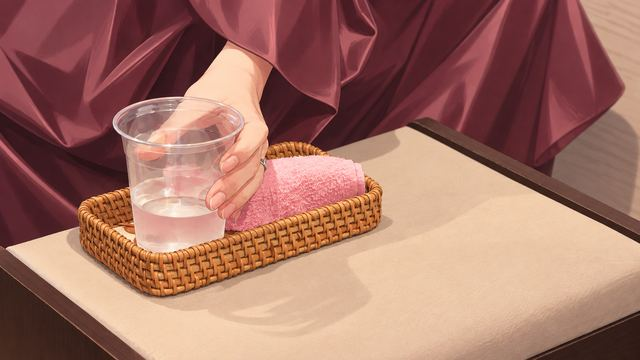
全部アニメ実写のまま
（社内版でのみ表示）
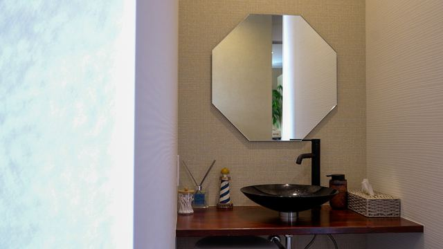
実写のまま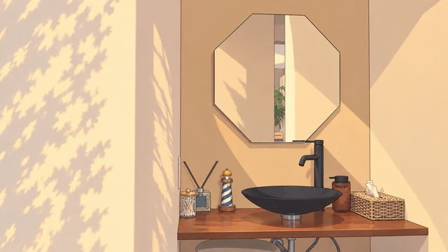
全部アニメ実写のまま
（顔が写るため非掲載）
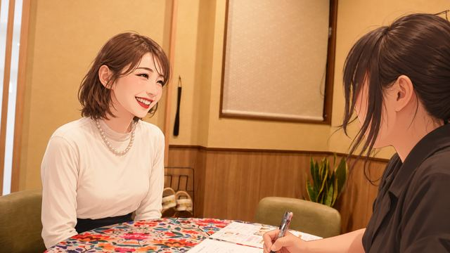
背景は実写／人物アニメ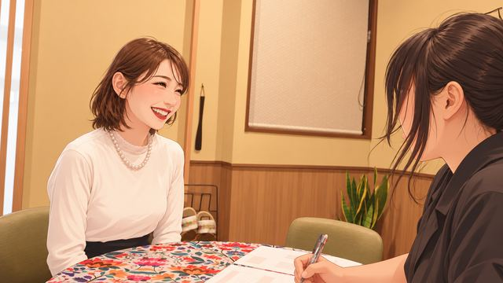
全部アニメ実写のまま
（社内版でのみ表示）
実写の看板（店名入りのため非掲載）
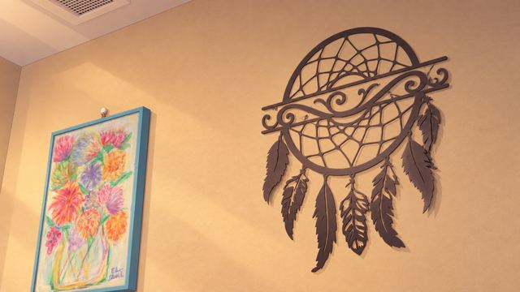
全部アニメ店名・キャッチ・予約導線
店名・キャッチ・予約導線
店名・キャッチ・予約導線
15秒広告版（1分版から各段1カット）
C010–2.5s
C022.5–5s
C035–7.5s
C047.5–10s
C0510–12s
C0612–15s
①理想 0–2.5s
＼ 自分のための時間を ／
②共感 2.5–5s
自分のこと、 後回しにしていませんか？
③解決策 5–7.5s
フェイシャル・ よもぎ蒸し ほか
④根拠 7.5–10s
施術の前に、 まずカウンセリング
④根拠 10–12s
落ち着いた空間で、 完全予約制
⑤オファー 12–15s
エンドカード（公式LINEへ）
この先の進め方
いまここ構成と3パターンの比較
打ち合わせ構成・パターン・URLを決める
素材受領撮影の元映像・ロゴ・外観写真
ナレ確定ナレーション原稿を仕上げる
本制作動画化→3重チェック→納品（約1ヶ月）
②実写の写真と確認用動画は社内でのみ共有しています。